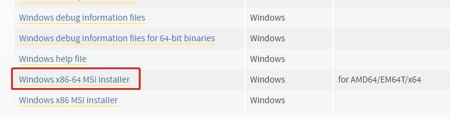
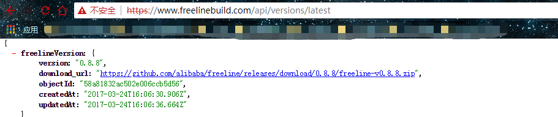
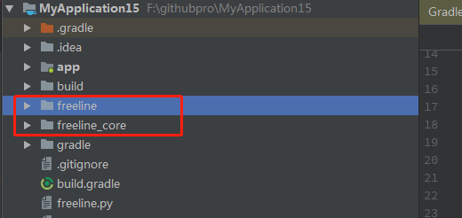
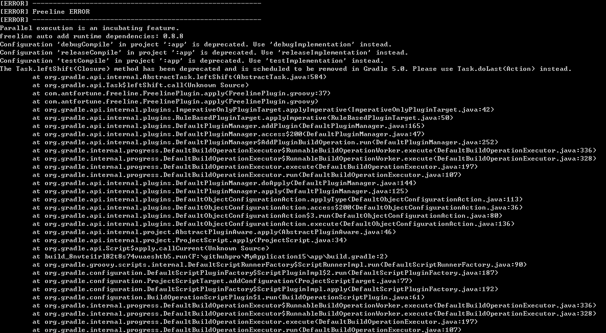
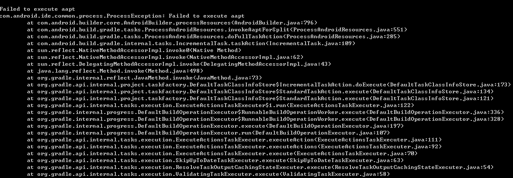
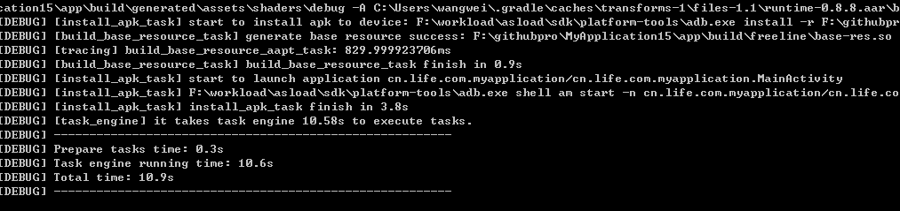
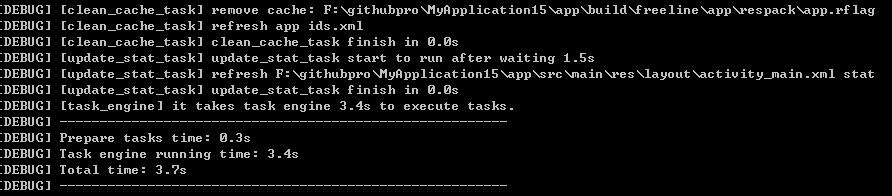

配置&引用freeline
第一步：安装python2.7环境
https://www.python.org/downloads/release/python-2712/

配置python环境，如果之前配置过3.x那么可能就需要重新在环境变量里面进行更改（下面是我的配置）
1 | xxxxxxx;F:\pythonload\;F:\pythonload\Scripts\; |
第二步：新建一个工程（Android）
在工程的根目录下进行配置
1 | buildscript { |
在主工程目录引用
1 | apply plugin: 'com.antfortune.freeline' |
第三步：进行下载freeline所需要的python执行文件和二进制依赖（工具）
如果自己翻墙&防火墙不受限制可以直接执行如下命令
1 | Windows: gradlew initFreeline |
但是如果上面执行失败由于网络问题可能就会有如下报错：
1 | FAILURE: Build failed with an exception. |
这个时候就登录https://www.freelinebuild.com/api/versions/latest该网址，进行下载zip包

下载完成之后，将zip包挪到你自己想挪的目录下进行如下命令
1 | F:\githubpro\MyApplication15>gradlew initFreeline -PfreelineLocal="F:\zip_package\freeline-v0.8.8.zip" |
当成功之后会有这两个文件夹

正式使用
第一次编译
1 | python freeline.py -f |
当执行这个命令的时候可能会有如下错误


什么原因呢？是由于我们gradle默认使用了aapt2，所以我们需要手动更改配置，具体位置gradle.properties
1 | # 禁止使用aapt2就好了 |
当再次使用编译的时候打印如下日志算成功

增量编译
我们随便修改一点文本或者其他，然后使用命令：
1 | python freeline.py |
此时如果成功则会有如下输出

此时手机上的APP属于关闭状态，需要自己手动点开。发现我们修改的内容已经更改。
常用命令
| 执行命令 | 描述 |
|---|---|
| python freeline.py | 增量编译 |
| python freeline.py -f | 全量编译 cleanBuild 强制执行一次 clean build |
| python freeline.py -d | 调试 打开debug模式 |
| python freeline.py -h | 帮助 显示帮助信息并退出 |
| python freeline.py -v | 版本 显示版本信息 |
| python freeline.py -w | 等待 让应用程序等待 debugger |
| python freeline.py -a | 全部 在所有工程上强制执行clean build 并执行-f全量编译 |
| python freeline.py -c | 清空 清空缓存目录和工作空间 |
| python freeline.py -i | 初始化 对工程进行进行freeline初始化配置 |